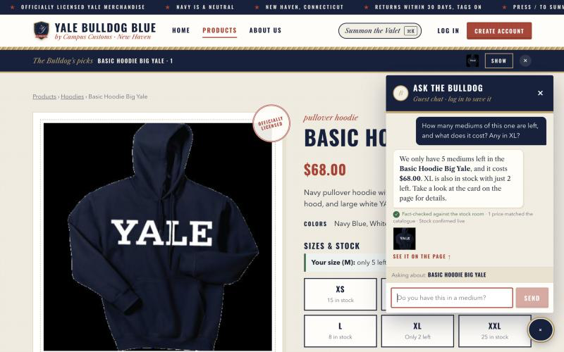
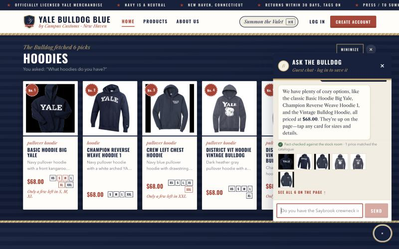
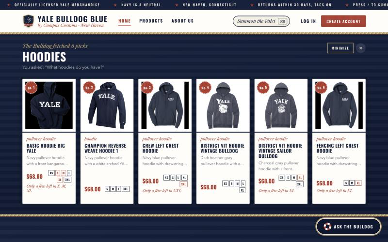
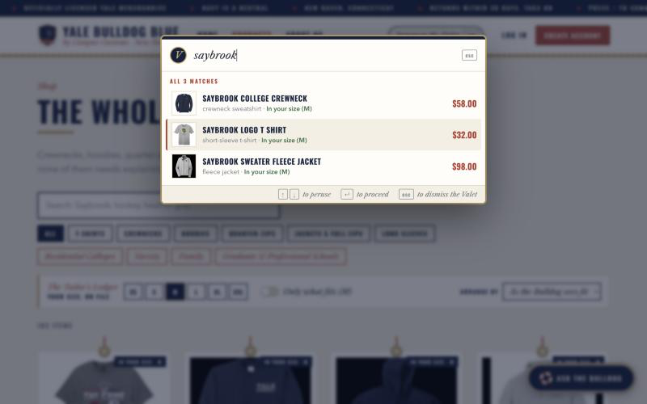

Three checks of the live storefront, each with a screenshot, what it proves, and a word from the Handbook. Every number below was checked against data/campus_customs.db.
TestedOctober 23, 2026, live in the browser
Front endReact + Vite (TypeScript)
BackendFastAPI on :8010, run from backend/
AgentPydanticAI · Gemini gemini-3.5-flash-lite
ShopperGuest (not logged in), size M on file
DataLive campus_customs.db: catalogue + inventory
#
Check
Result
1
The chat checks an item's inventory and price, honestly, from the database
✓ Pass
2
A category question ("What hoodies do you have?") puts product cards on the page
✓ Pass
3
A Problem 9 usability feature: The Valet (instant search, ⌘K or /)
✓ Pass
Check the First
The Bulldog checks the stock room
On the Basic Hoodie Big Yale product page, the shopper asked: How many mediums of this one are left, and what does it cost? Any in XL?

InventoryThe chat answers "5 mediums left, $68.00, XL just 2 left" from the database. The page's own size grid agrees (XL "Only 2 left"), and a green note confirms the reply was fact-checked.
What this proves
The agent looked up live stock and price with its database tools, worked out which item "this one" meant from the page the shopper was on, and reported the exact numbers. The Fact-Checker then confirmed the quoted price matched the catalogue before the reply was shown.
The database saysbasic-hoodie-big-yale: price 68.0; stock XS=15, S=5, M=5, L=8, XL=2, XXL=25. That matches the reply exactly.
Honest about its inventory the way old families are honest about their boats: it states the facts, gives the exact figure, and never pretends there's one more in the boathouse than there is.
Check the Second
Ask about hoodies, and the cards appear
From the Home page, the shopper asked the chat: What hoodies do you have?

Question → cardsThe question in the chat and the result on the page together: the agent's structured product matches arrive as the "Bulldog's Picks" shelf, titled "Hoodies".

The full shelfSix hoodie cards, each with a photo, name, price, short description, in-stock sizes, and "only a few left" notes. Each one links to its product page.
What this proves
The agent searched the catalogue and returned structured product matches (the API contract). The front end rendered them as product cards on the page itself, not just in the chat. Clicking a card (the Fencing Left Chest Hoodie) still opened the single-item page from Problem 3.
The database says
All six cards show $68.00, and their size chips match in-stock inventory exactly. For example, Champion Reverse Weave Hoodie 1 is S, M, L, XXL (XS and XL are sold out), and Fencing Left Chest Hoodie is S, M, XL.
Six hoodies, laid out like sweaters on the window seat at Mory's: properly folded, correctly priced, and not one of them in a color you'd have to explain at Thanksgiving.
Check the Third
The Valet, summoned with a keystroke
On the Products page, the shopper pressed /, typed saybrook, pressed ↓ once, then Enter. This is a Problem 9 usability feature; see output/usability.md, §1.

The ValetInstant search from any page. All three Saybrook items appear with price and "In your size (M)", the size the shopper put on file with the Tailor's Ledger. The keyboard highlight sits on the second result.
What this proves
A shopper can get from any page to an exact item in a few keystrokes, with no scrolling and no AI call. Pressing Enter opened /products/saybrook-logo-t-shirt, and the Valet closed itself. The "In your size" tags show the second Problem 9 feature, the Tailor's Ledger, working too.
The database says
Saybrook College Crewneck $58.00 (M=15), Saybrook Logo T Shirt $32.00 (M=12), Saybrook Sweater Fleece Jacket $98.00 (M=8). All three are in stock in M, as shown.
The Valet does what good staff always has: it appears the moment it's summoned, remembers your size without being asked twice, and leaves without a word once you've found what you came for.